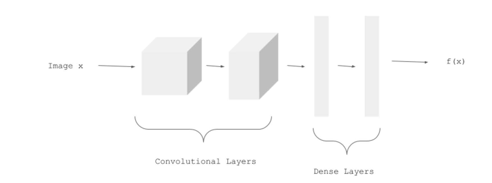
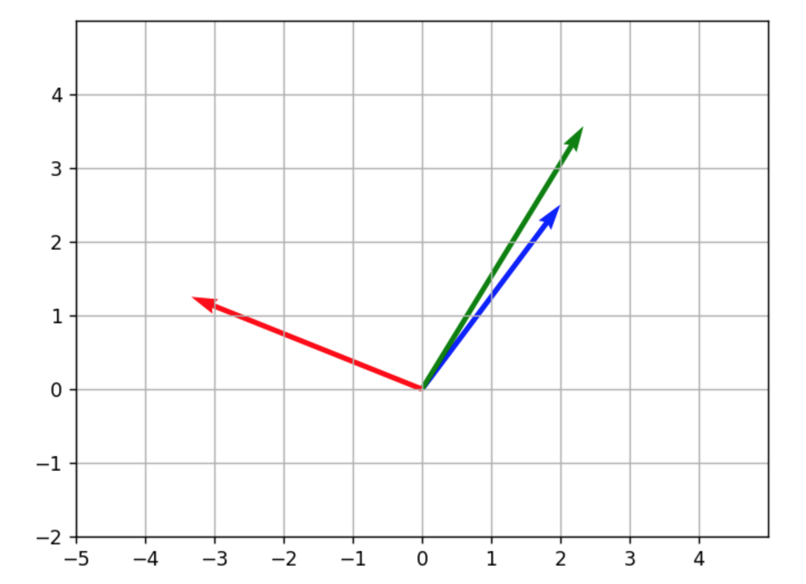
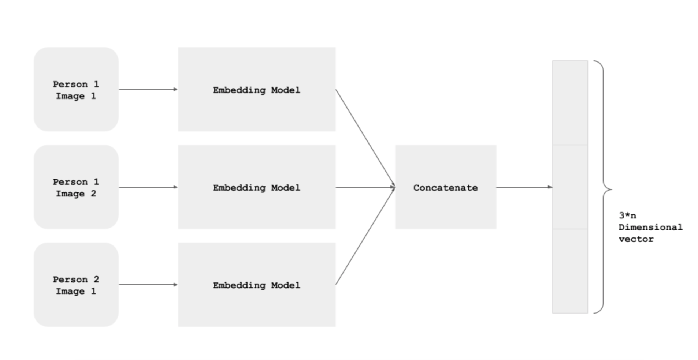
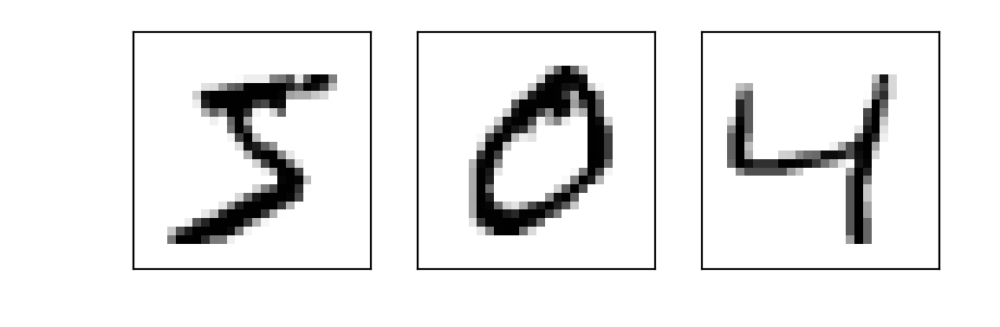
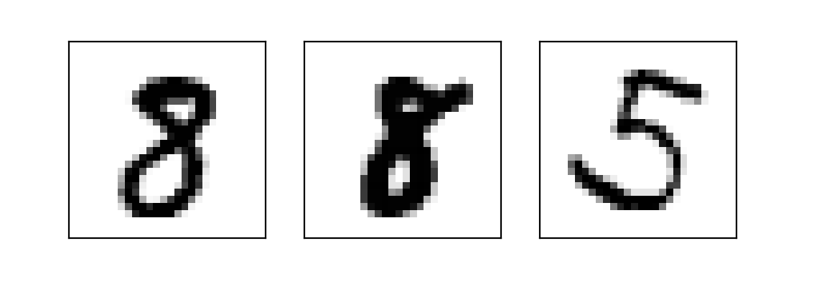
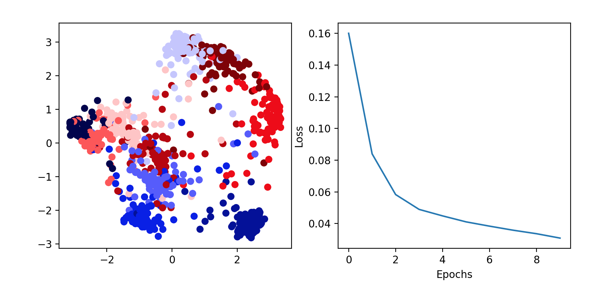

Create a Siamese Network with Triplet Loss in Keras
Task 1: Understanding the Approach
1 | %matplotlib notebook |
TensorFlow version: 2.1.0
Understanding the Approach
This appraoch is taken from the popular FaceNet paper.
We have a CNN model called EmbeddingModel:

We use three images for each training example:
person1_image1.jpg(Anchor Example, represented below in green)person1_image2.jpg(Positive Example, in blue)person2_image1.jpg(Negative Example, in red).

Siamese Network
All the three images of an example pass through the model, and we get the three Embeddings: One for the Anchor Example, one for the Positive Example, and one for the Negative Example.

The three instances of the EmbeddingModel shown above are not different instances. It’s the same, shared model instance - i.e. the parameters are shared, and are updated for all the three paths simultaneously.
1 | import tensorflow as tf |
Task 2: Importing the Data
1 | (x_train, y_train), (x_test, y_test) = tf.keras.datasets.mnist.load_data() |
(60000, 28, 28)
1 | x_train = np.reshape(x_train, (x_train.shape[0], 784))/255. |
(60000, 784)
Task 3: Plotting Examples
1 | def plot_triplets(examples): |
1 | plot_triplets([x_train[0], x_train[1], x_train[2]]) |

Task 4: A Batch of Triplets
1 | def create_batch(batch_size=256): |
1 | examples = create_batch(1) |

Task 5: Embedding Model
1 | emb_size = 64 |
Model: "sequential"
_________________________________________________________________
Layer (type) Output Shape Param #
=================================================================
dense (Dense) (None, 64) 50240
_________________________________________________________________
dense_1 (Dense) (None, 64) 4160
=================================================================
Total params: 54,400
Trainable params: 54,400
Non-trainable params: 0
_________________________________________________________________
1 | example = np.expand_dims(x_train[0], axis=0) |
[0.42349347 0.43482512 0.5846526 0.5047948 0.4264534 0.48105526
0.37568194 0.5898737 0.61923265 0.38126072 0.51810735 0.6918024
0.42151055 0.31393877 0.550636 0.4718757 0.72107047 0.5304595
0.60560906 0.54731256 0.47088197 0.57321566 0.38795182 0.3528969
0.5260858 0.5058847 0.60069776 0.5351782 0.45879558 0.49318898
0.52481294 0.48127335 0.41399142 0.53644794 0.596148 0.35952103
0.4660656 0.51290053 0.34802675 0.28829136 0.49941048 0.41946915
0.5193161 0.59598917 0.42652634 0.7554737 0.51301926 0.3393702
0.61319596 0.3912717 0.58737236 0.5881264 0.5892425 0.62002826
0.47996673 0.44889334 0.47385594 0.4038328 0.60131633 0.57539546
0.47411144 0.5514124 0.6192302 0.60763264]
Task 6: Siamese Network
1 | input_anchor = tf.keras.layers.Input(shape=(784,)) |
Model: "model"
__________________________________________________________________________________________________
Layer (type) Output Shape Param # Connected to
==================================================================================================
input_1 (InputLayer) [(None, 784)] 0
__________________________________________________________________________________________________
input_2 (InputLayer) [(None, 784)] 0
__________________________________________________________________________________________________
input_3 (InputLayer) [(None, 784)] 0
__________________________________________________________________________________________________
sequential (Sequential) (None, 64) 54400 input_1[0][0]
input_2[0][0]
input_3[0][0]
__________________________________________________________________________________________________
concatenate (Concatenate) (None, 192) 0 sequential[1][0]
sequential[2][0]
sequential[3][0]
==================================================================================================
Total params: 54,400
Trainable params: 54,400
Non-trainable params: 0
__________________________________________________________________________________________________
Task 7: Triplet Loss
A loss function that tries to pull the Embeddings of Anchor and Positive Examples closer, and tries to push the Embeddings of Anchor and Negative Examples away from each other.
Root mean square difference between Anchor and Positive examples in a batch of N images is:
$
\begin{equation}
d_p = \sqrt{\frac{\sum_{i=0}^{N-1}(f(a_i) - f(p_i))^2}{N}}
\end{equation}
$
Root mean square difference between Anchor and Negative examples in a batch of N images is:
$
\begin{equation}
d_n = \sqrt{\frac{\sum_{i=0}^{N-1}(f(a_i) - f(n_i))^2}{N}}
\end{equation}
$
For each example, we want:
$
\begin{equation}
d_p \leq d_n
\end{equation}
$
Therefore,
$
\begin{equation}
d_p - d_n \leq 0
\end{equation}
$
This condition is quite easily satisfied during the training.
We will make it non-trivial by adding a margin (alpha):
$
\begin{equation}
d_p - d_n + \alpha \leq 0
\end{equation}
$
Given the condition above, the Triplet Loss L is defined as:
$
\begin{equation}
L = max(d_p - d_n + \alpha, 0)
\end{equation}
$
1 | alpha = 0.2 |
Task 8: Data Generator
1 | def data_generator(batch_size=256): |
Task 9: Model Training
1 | batch_size = 2048 |

WARNING:tensorflow:sample_weight modes were coerced from
...
to
['...']